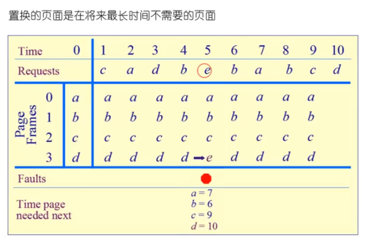
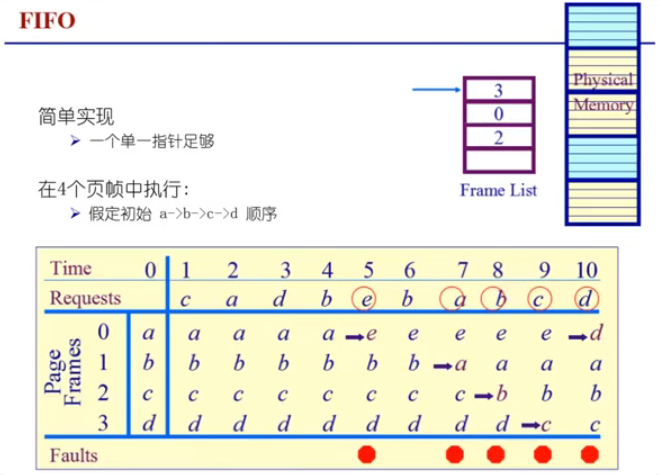
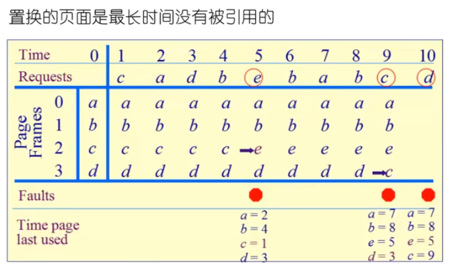
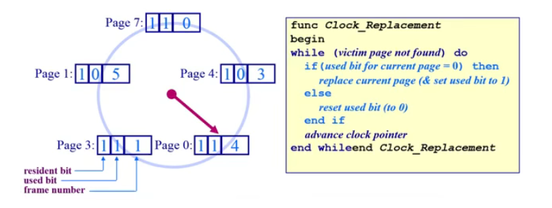
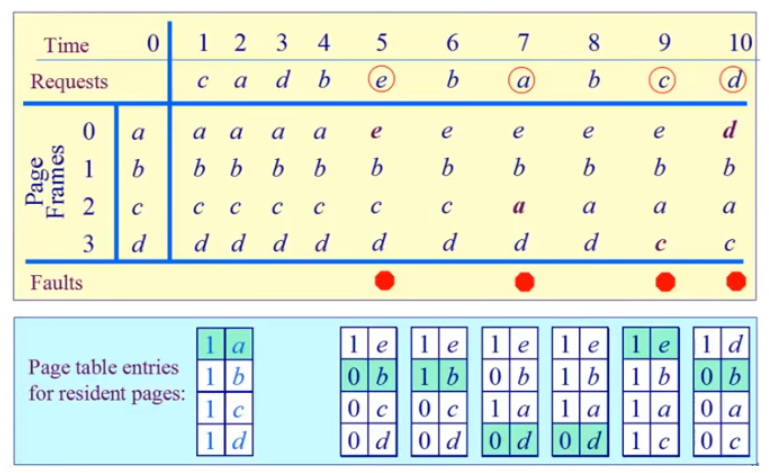
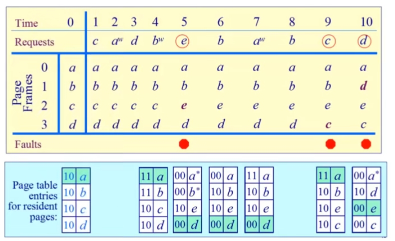
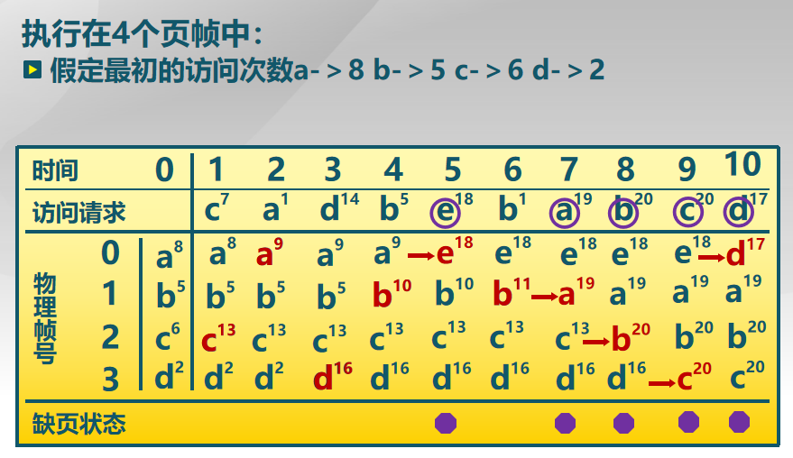

操作系统之 chapter6.1 局部页面置换算法
本文将介绍页面置换算法中的 局部 页面置换算法，包括最优页面置换算法（OPT）、先进先出页面置换算法（FIFO）、最近最久使用页面置换算法（LRU）、时钟页面置换算法（Clock）、二次机会页面置换算法（Enhanced Clock）和最不常用页面置换算法（LFU），并介绍了 Belady 现象。
页面置换算法
功能与目标
功能：当缺页中断发生，需要调入新的页面，而内存已满时，选择内存当中哪个物理页面被置换。
目标：尽可能地减少页面的换进换出次数（即缺页中断的次数）。具体来说，把 未来 不再使用的或短期内较少使用的页面换出，通常只能在局部性原理指导下 依据过去的统计数据来进行预测。
页面锁定（frame locking）：用于描述必须常驻内存的操作系统的关键部分或时间关键（time-critical）的应用进程。
- 实现方法：在页表中添加锁定标记位（lock bit）。
实验设置与评价方法
如何评价一个页面置换算法的优劣？
模拟一个页面置换的行为，并记录产生页缺失的数量。若有更少的缺失，则有更好的性能。
局部页面置换算法
最优页面置换算法（OPT）
基本思路：当一个缺页中断发生时，对于保存在内存当中的每一个逻辑页面，计算在它的下一次访问之前，还需等待多长时间，从中选择等待时间最长的那个，作为被置换的页面。
缺点：这是一种理想情况，在实际系统中是 无法实现 的，因为操作系统无法知道每一个页面要等待多长时间以后才会再次被访问。
OPT 算法页面置换示例：

如上图，在 time=0 的初始时刻，内存中有四个物理页 a,b,c,d。在访问到 time=5 时，程序需要访问物理页 e，但它在内存中不存在；从图中可以看到，接下来要访问的物理页分别是 b,a,b,c,d，物理页 d 是将来最长时间才被访问的物理页。所以，在访问物理页 e 时，最优解 是将物理页 d 置换出去。但操作系统无法预知未来，所以这个算法无法实际应用。
OPT 算法可用作其他算法的性能评价的依据（在一个模拟器上运行某个程序，并记录每一次的页面访问情况，在第二遍运行时即可使用最优算法）。
先进先出页面置换算法（FIFO）
基本思路：选择在内存中驻留时间最长的页面淘汰。具体来说，系统维护着一个链表，记录了所有位于内存中的逻辑页面。从链表的排列顺序来看，链首页面的驻留时间最长，链尾页面的驻留时间最短。当发生一个缺页中断时，把链首页面淘汰出去，并把新的页面添加到链表的末尾。
如果访问一个页面时，没有产生缺页中断，这时链表会有何动作？
会遍历链表，找出对应的逻辑页面，将它从链表内部删除，并添加在链表尾部（让该页面刷新为驻留时间最短的页面）。
缺点：涉及到链表遍历，性能较差，置换出的页面有可能是经常要访问的页面，并且有 Belady 现象。FIFO 算法很少单独使用。
FIFO 算法页面置换示例（初始时，假设链表首部为页面 a，尾部为页面 d）：

最近最久使用页面置换算法（LRU）
基本思路：最近最久使用页面置换算法（Least Recently Used, LRU），当一个缺页中断发生时，选择 最近最久未使用 的那个页面淘汰。
LRU 算法是对 OPT 算法的 一个近似，其依据是程序的局部性原理，即在最近一小段时间（最近几条指令）内，如果某些页面被频繁地访问，那么在将来的一小段时间内，它们还可能会再一次被频繁地访问。反过来说，如果过去某些页面长时间未被访问，那么在将来它们可能会继续得不到访问。
LRU 算法页面置换示例：

LRU 算法需要记录各个页面使用时间的先后顺序，开销比较大。
该算法两种可能的实现方法是：
系统维护一个页面链表，最新使用过的页面作为首结点，最久未使用的作为尾结点。
- 每一次访问内存时，找出相应的页面，把它从链表中摘下来，再移动到链表的首部；
- 每次缺页中断发生时，总是淘汰链表末尾的页面，它就是最久未使用的。
设置一个活动页面栈，栈顶存储最新使用过的页面的页号，栈底存储最久未使用过的页面的页号。
- 当访问某页时，将此页号压入栈顶，并考察栈内是否有与此页面相同的页号，若有则抽出
- 每次缺页中断发生时，总是淘汰栈底的页面，它就是最久未使用的。
这两种实现在查找某一个页面是否在链表（或栈）中时，都是线性时间复杂度，效率低。LeetCode 刷题之 146LRU 缓存 中给出了一种常数时间复杂度的设计，它使用了双向链表 + 哈希表来实现。
时钟页面置换算法（Clock）
Clock 算法是对 LRU 算法的近似，对 FIFO 算法的一种改进。
基本思想：借助页表项的访问位（access bit），当一个页面被装入内存时，把该位重置为 0，如果这个页面后续被访问（读 / 写操作），则硬件（软件也能置位）把该位置为 1。
在设计上，把各个页面组织成 环形链表（类似钟的表面），把指针指向最老（最先进来）的页面。当发生缺页中断时，考察指针所指向的最老页面：
- 若它的访问位为
0，则可以立即淘汰；- 解释：也就是在内存中，但没有被访问过。
- 若访问位为
1，则将访问位置为0，然后指针往下移动一格；- 解释：它是最老的页面，但是被访问过，那就先不淘汰它，如果后续没有未访问过的页面的话，则指针会转一圈再回来，并把它淘汰。
- 如此下去，直到找到被淘汰的页面，然后把指针移动到下一格。
Clock 算法页面置换示意图（used bit 即 access bit）：

在上图中，维持一个保存在内存中环形页面链表。初始时，假设 resident bit 都为 1，也就是虚拟页对应的物理页面存在；图中指针顺时针移动，下次将被替换的页面为 Page 1。
Clock 算法页面置换示例：

上图的置换流程可以参考上面的文字和伪代码。
改进型的时钟页面置换算法（Enhanced Clock）
改进型的时钟页面置换算法，又可称为二次机会算法。
改进原因：因为考虑到时钟页面置换算法，有时候会把一些 dirty bit 为 1（有过写操作）的页面进行置换，这需要把页面写回外存中（而非直接释放），代价会比较大。因此，可以结合 access bit 和 dirty bit，共同决定应该置换哪一页。
换句话说，当页面替换时，可以按照如下的优先级规则进行：
| 优先级 | access | dirty | 替换次数 | 置位结果 |
|---|---|---|---|---|
| 1 | 0 | 0 | 直接替换 | - |
| 2 | 1 | 0 | 一次机会 | (0, 0) |
| 2 | 0 | 1 | 一次机会 | (0, 0) |
| 3 | 1 | 1 | 两次机会 | (0, 1) |
根据这个优先级规则，替换时会优先选择优先级较低的页面进行替换，以提高缓存的命中率。
两次机会时，优先重置 access bit 位。
改进型 Clock 算法页面置换示例：

在上图中，当 time=4 时刻结束时，内存的 4 个页面均被访问，但是仅有页面 a 和页面 b 被写过，在 time=5 时，根据上述优先级规则，页面 a 和页面 b 有两次机会，页面 c 和页面 d 有一次机会，最后指针会指向页面 c 进行置换，然后指针往下移动一格。
弹幕中看到大家的两个问题，这个给机会的过程，会将 dirty bit 从 1 重置为 0，那么：
1）被写过的页面，是什么时候写回外存中去的？是每次从 1 重置为 0 后，就随即写回外存，还是最后被置时才会写回外存（如果是这种，其它重置为 0 的页面，还怎么知道它有没有被写过）？
2）这里的 access bit 和 dirty bit 的修改是否是直接修改的页表中对应的位？
最不常用页面置换算法（LFU）
基本思路：最不常用页面置换算法（Least Frequently used, LFU），当一个缺页中断发生时，选择 访问次数最少 的那个页面，并淘汰。
实现方法：对每一个页面设置一个访问计数器，每当一个页面被访问时，该页面的访问计数器加 1。 当发生缺页中断时，淘汰计数值最小的那个页面。
LRU 和 LFU 的对比：LRU 考察的是 多久未访问 ，时间越短越好（不会被置换出去）；而 LFU 考察的是 访问的次数或频度，访问次数越多越好。
LFU 算法页面置换示例：

问题：
一个页面在进程开始时使用得很多，但以后就不使用了，LFU 统计的是整体的访问次数，所以此时这个页面还会被保留在内存中。
实现也费时费力，需要对每一个页面加一个计数器。解决方法：
定期把次数寄存器右移一位。它最主要的问题是只考虑频率而没考虑时间，我们可以隔一段时间砍掉一半的次数，进而改善这个问题。
Belady 现象
在采用 FIFO 算法时，有时会出现在分配的物理页面数增加，缺页率反而提高的异常现象。
原因：FIFO 算法的置换特征与进程访问内存的动态特征是矛盾的，它仅仅按照页面进入内存的顺序进行替换，与置换算法的目标（即替换较少使用的页面）是不一致的，因此，被它置换出去的页面不一定是进程不会访问的。
Belady 是一个科学家的名字。
时钟、改进型的时钟页面置换是否有 Belady 现象？
- 没有。
为什么 LRU 页面置换算法没有 Belady 现象？
- 简单解释：LRU 符合一类叫称之为「栈算法」的特点。
总结与比较
局部页面算法汇总
| 算法 | 描述 |
|---|---|
| 最优页面置换算法 (OPT) | 选择未来最长时间内不再被访问的页面进行置换。 |
| 先进先出页面置换算法 (FIFO) | 最早进入内存的页面被置换出去。 |
| 最近最久未使用页面置换算法 (LRU) | 根据页面最近被访问的时间进行置换，最久未被使用的页面被置换出去。 |
| 时钟页面置换算法 (Clock) | 使用一个指针按顺序扫描页面，如果找到一个未被使用的页面，则置换出去；否则，将指针指向的页面标记为未使用。 |
| 二次机会页面置换算法 (Second-Chance) | 类似于时钟算法，但是给予页面第二次机会，如果页面被访问或被写入过，则将其标记为未访问或未被写入，否则置换出去。 |
| 最不常用页面置换算法 (LFU) | 根据页面被访问的频率进行置换，最不常被使用的页面被置换出去。 |
LRU、FIFO 和 Clock 比较
| 算法 | 原理 | 性能 | 开销 |
|---|---|---|---|
| LRU | 根据最近访问时间排序页面，动态调整页面顺序 | 性能较好 | 系统开销较大 |
| FIFO | 根据进入时间排序页面，顺序固定不变 | 可发生 Belady 现象 | 开销较小 |
| Clock | 不动态调整页面顺序，仅做标记，缺页时移动到链表末尾 | 性能适中 | 系统开销适中 |
- LRU 算法可退化为 FIFO 算法。
- Clock 算法是对 LRU 算法和 FIFO 算法的折中，不能记录精确访问顺序，可退化为 FIFO 算法。
从算法的退化可以看出，不同的算法只是页面替换的一个环节，如果要有效减少缺页产生的次数，除了算法本身之外，我们还要对访问序列有一定的要求，访问序列最好是具有局部性的访问特征，那么 LRU、Clock 算法才会发挥特征，如果序列不具有局部性，那么 LRU、Clock、FIFO 就没什么区别了。
参考资料：
1：https://github.com/OXygenMoon/OperatingSystemInDepth
2：https://blog.csdn.net/weixin_53407527/article/details/125008097